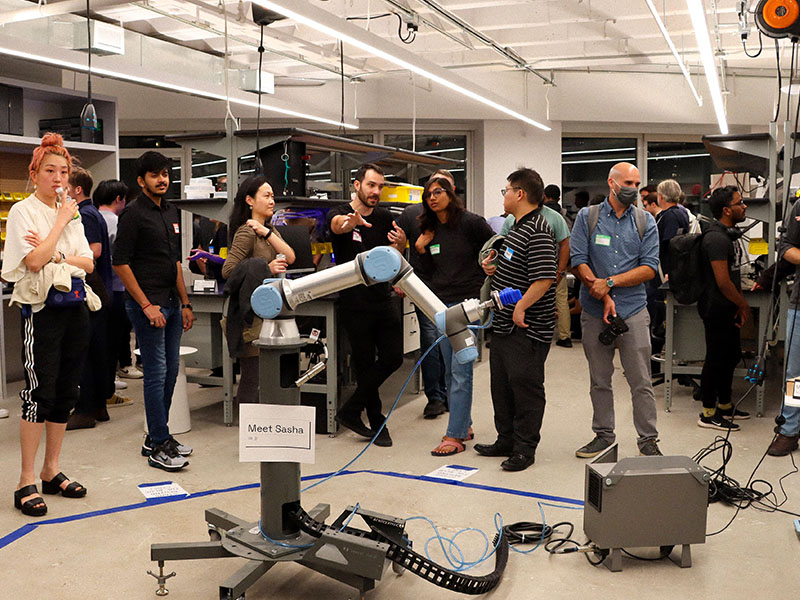
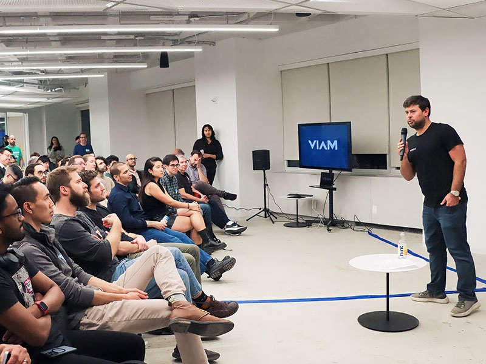
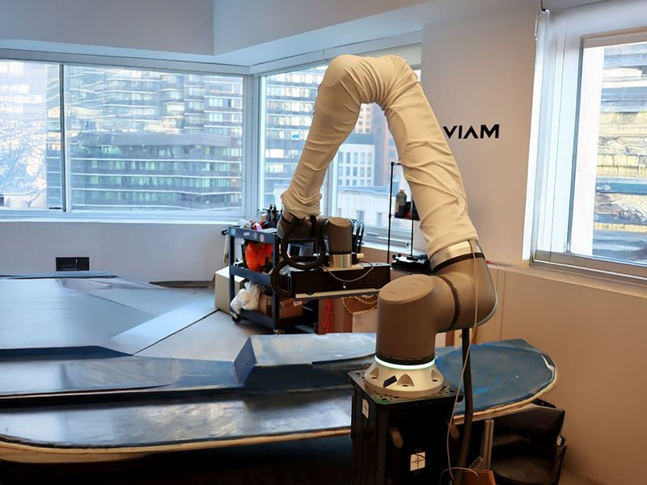

Welcome message
LLMday
Hello everyone, let us walk you through the day!

| Time | main room |
|---|---|
| 09:00 | Welcome message |
| 09:30 | Building Evaluation Systems for AI Coding Agents at Scale |
| 10:00 | Coffee break |
| 10:30 | The Limits of Vibe Coding: What Happens When AI-Generated Code Lands in Your Cluster |
| 11:00 | Securing & Building Agentic OSS Environments |
| 11:30 | From TrafficAI to GhostBreakers: Building Stateful AI Agents with Cortex, OpenFlow, and Snowflake Postgres |
| 12:00 | Don't Panic: It's Not Just You - LLM Trace Sampling Doesn't Work |
| 12:30 | Lunch & networking |
| 13:30 | Exploring the Convergence of Machine Learning, AI, and Cloud-Native Technologies in Automation |
| 14:00 | The way to Edge AI |
| 14:30 | 10 Lessons from building High-Stakes Agents |
| 15:00 | Engineering Better Prompts for AI Assisted Development |
| 15:30 | Context Matters |
| 16:00 | Reimagined AI-DLC Manifesto: Moving Beyond the Productivity Paradox to Engineering Predictability |
| 16:30 | Multi-Agent Architectures: Solving Production LLM Reliability at Scale |
| 17:00 | Fine‑Tuning LLMs for Voice‑First Consumer Experiences |
| 17:30 | Wrap up |


1900 Broadway, 6th Floor,
New York, NY 10023


